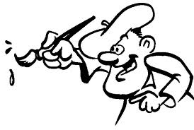

Welcome to the Art Exhibition Game!

Scroll the page to read the whole text. Read carefully and with no hurry.
Introduction
You just became part of a community of X painters (including you). The community will collectively decide which paintings can be displayed in 3 artistic exhibitions: A, B, and C. The three exhibitions have different values for the members of the community.Always keep in mind: In this game you will act both as an artist and as an art critic.
The game
The game is divided in rounds, and each round is divided in the following steps:- Step 1: Each artist creates 1 painting,
- Step 2: Each artist chooses 1 exhibition to which he / she submits the work of art.
- Step 3: Each artist reviews 3 of the 8 paintings produced by the other artists. The review is done by assigning a rating on a scale from 0 to 10.
- Step 4: Within each exhibition, all paintings are ranked based on the average review score from highest to lowest. .
Payoff calculation
- You will receive a fixed monetary compensation of 10 CHF, plus a variable amount based on your performance in the game.
- If one of your painting is published you will receive a sum equal to (3 / N) CHF, where N is the number of artists who published with you in the same exhibition.
- If your painting is not published you will receive 0 CHF.
- The maximum amount of money you can win is 30*3 + 10 = 100 CHF.
Who reviews what
- At each round you will be randomly assigned to review 3 paintings, and you can never review your own painting.
Other rules
- You have a limited amount of time to complete each step of the game. The time left will be displayed on the screen.
- At each new round, when creating a new painting, you will continue from your previous submission.
- It is possible to copy paintings from the past exhibitions.
Termination
- The game will end either after rounds.
Graphical examples of the interface to create paintings
-
Each player produces his or her paintings by moving a set of sliders as illustrated in the picture below.

-
During the creation of the painting, each player is provided with the an overview of the past exhibitions.

-
Players can click on a painting to display it in its original dimensions. Furthermore, during the creation phase,
it is allowed to select and copy past painting as the base of their new work of art.

-
Players review paintings by selecting a value between 0 and 10 on a slider on top of the pictures.